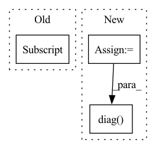

Pattern ID :20791

Before Change
def _step(self, action, player):
self.step(action, player)
self.record[-1] = [self.BLACK, self.WHITE][player], action
def diff_info(self, _):
if len(self.record) == 0:
After Change
def _step(self, action, selected_player):
selected_color = [self.BLACK, self.WHITE][selected_player]
x, y = action // 3, action % 3
self.board[x, y] = selected_color
// check winning condition
if self.board[x, :].sum() == 3 * selected_color \
or self.board[:, y].sum() == 3 * selected_color \
or (x == y and np.diag(self.board, k=0).sum() == 3 * selected_color) \
or (x == 2 - y and np.diag(self.board[::-1, :], k=0).sum() == 3 * selected_color):
self.win_color = selected_color
self.record.append((selected_color, action))
In pattern: SUPERPATTERN
Frequency: 4
Non-data size: 3
Instances
Fragment ID: 66998455
Project Name: dena/handyrl
Commit Name: 1dce83a00bbd21ff0a67fcb64ce25e5e59256b97
Time: 2021-03-04
Author: a.a.b.a.b.c.a.b.c.d.abcd1234@gmail.com
File Name: handyrl/envs/parallel_tictactoe.py
M Class Name: Environment
N Class Name: Environment
M Method Name: _step(3)
N Method Name: _step(3)
M Parent Class: TicTacToe
N Parent Class: TicTacToe
M File Name: handyrl/envs/parallel_tictactoe.py
N File Name: handyrl/envs/parallel_tictactoe.py
M Start Line: 27
M End Line: 28
N Start Line: 27
N End Line: 38
'>
Before Change
for j in range(Vs[i].shape[0]):
if np.sum(Vs[i][:j]) / var_tot > self.var_explained:
cums[i] = j + 1
break
// if Vs[i][0] / sum_ > self.var_explained:
After Change
// Vs = dict() // eigenvalues
lmds = dict() // eigenvalues
cums = dict() // cumulative distribution of eigenvalues
proj_mats = []
shape_out = ()
for i in range(n_spl):
X_[..., i] = X[..., i] - self.Xmean
for j in range(self.ndim - 1):
X_i = unfold(X_[..., i], mode=j)
if j not in Phi:
Phi[j] = 0
Phi[j] = Phi[j] + np.dot(X_i, X_i.T)
for i in range(self.ndim - 1):
eig_vals, eig_vecs = np.linalg.eig(Phi[i])
idx_sorted = eig_vals.argsort()[::-1]
Us[i] = eig_vecs[:, idx_sorted]
cum = eig_vals[idx_sorted]
var_tot = np.sum(cum)
for j in range(cum.shape[0]):
if np.sum(cum[:j]) / var_tot > self.var_explained:
shape_out += (j + 1,)
break
cums[i] = cum
// if Vs[i][0] / sum_ > self.var_explained:
// cums[i] = 1
// else:
// for j in range(Vs[i].shape[0] - 1, 0, -1):
// if np.sum(Vs[i][j:]) / sum_ > (1 - self.var_explained):
// cums[i] = j + 1
// break
proj_mats.append(Us[i][:, :shape_out[i]].T)
for i_iter in range(self.max_iter):
Phi = dict()
for i in range(self.ndim - 1): // ith mode
if i not in Phi:
Phi[i] = 0
for j in range(n_spl):
X_j = X_[..., j] // jth tensor/sample
Xj_ = multi_mode_dot(X_j, [proj_mats[m] for m in range(self.ndim - 1) if m != i],
modes=[m for m in range(self.ndim - 1) if m != i])
Xj_unfold = unfold(Xj_, i)
Phi[i] = np.dot(Xj_unfold, Xj_unfold.T) + Phi[i]
eig_vals, eig_vecs = np.linalg.eig(Phi[i])
idx_sorted = eig_vals.argsort()[::-1]
lmds[i] = eig_vals[idx_sorted]
proj_mats[i] = eig_vecs[:, idx_sorted]
proj_mats[i] = (proj_mats[i][:, :shape_out[i]]).T
x_transformed = multi_mode_dot(X, proj_mats, modes=[m for m in range(self.ndim - 1)])
x_trans_vecs = unfold(x_transformed, mode=-1)
x_trans_vars = np.diag(np.dot(x_trans_vecs, x_trans_vecs.T))
idx_order = x_trans_vars.argsort()[::-1]
self.proj_mats = proj_mats
self.idx_order = idx_order
'>
Fragment ID: 66998445
Project Name: pykale/pykale
Commit Name: 8a8cdd2ecbefbe9517789f6015a0d4e937733f6a
Time: 2020-12-26
Author: szhou20@sheffield.ac.uk
File Name: kale/embed/mpca.py
M Class Name: MPCA
N Class Name: MPCA
M Method Name: _fit(2)
N Method Name: _fit(2)
M Parent Class: BaseEstimator,TransformerMixin
N Parent Class: BaseEstimator,TransformerMixin
M File Name: kale/embed/mpca.py
N File Name: kale/embed/mpca.py
M Start Line: 79
M End Line: 127
N Start Line: 122
N End Line: 189
'>
Before Change
// up[(first + sparse_variables_1):, _] = 0
mask = np.concatenate(([0] * sparsity, [1] * (view_p - sparsity))).astype(bool)
np.random.shuffle(mask)
weights[mask, _] = 0
weights = _decorrelate_dims(weights, cov_)
weights /= np.sqrt(np.diag((weights.T @ cov_ @ weights)))
After Change
while np.sum(np.unique(mask, axis=1, return_counts=True)[1] > 1) > 0 or np.sum(
np.sum(mask, axis=0) == 0) > 0:
np.random.shuffle(mask.flat)
weights = weights * mask
weights = _decorrelate_dims(weights, cov_)
if np.sum(np.diag((weights.T @ cov_ @ weights)) == 0) > 0:
print()
weights /= np.sqrt(np.diag((weights.T @ cov_ @ weights)))
true_features.append(weights)
'>
Fragment ID: 66998486
Project Name: jameschapman19/cca_zoo
Commit Name: fcbea373cbd6a237b62fdf365a4c7a09e46701ef
Time: 2021-05-06
Author: james.chapman.19@ucl.ac.uk
File Name: cca_zoo/data.py
M Class Name: AnonimousClass
N Class Name: AnonimousClass
M Method Name: generate_covariance_data(8)
N Method Name: generate_covariance_data(8)
M Parent Class:
N Parent Class:
M File Name: cca_zoo/data.py
N File Name: cca_zoo/data.py
M Start Line: 43
M End Line: 68
N Start Line: 35
N End Line: 71
'>
Before Change
first = np.random.randint(N - sparse_variables_1)
up[:first, _] = 0
up[(first + sparse_variables_1):, _] = 0
up[:, _] /= np.sqrt((up[:, _].T @ cov[:N, :N] @ up[:, _]))
vp = np.random.rand(M, k) - 0.5
for _ in range(k):
After Change
up[:first, _] = 0
up[(first + sparse_variables_1):, _] = 0
up = decorrelate_dims(up, cov[:N, :N])
up /= np.sqrt(np.diag((up.T @ cov[:N, :N] @ up)))
vp = np.random.rand(M, k) - 0.5
for _ in range(k):
'>
Fragment ID: 66998452
Project Name: jameschapman19/cca_zoo
Commit Name: a4b73712a2008571b61bcbc2b2d54f54df9d8278
Time: 2021-02-01
Author: james.chapman.19@ucl.ac.uk
File Name: cca_zoo/data.py
M Class Name: AnonimousClass
N Class Name: AnonimousClass
M Method Name: generate_simulated_data(12)
N Method Name: generate_simulated_data(12)
M Parent Class:
N Parent Class:
M File Name: cca_zoo/data.py
N File Name: cca_zoo/data.py
M Start Line: 292
M End Line: 342
N Start Line: 292
N End Line: 326